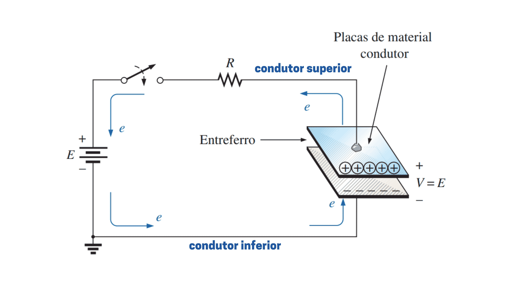

Introdução
Capacitância
Capacitância é uma medida da capacidade de um sistema para armazenar carga elétrica. No contexto de um capacitor, que é um componente elétrico fundamental, a capacitância define a quantidade de carga que pode ser armazenada por unidade de diferença de potencial (ou tensão) aplicada entre os seus terminais. A unidade de medida da capacitância é o farad (F), nomeada em homenagem ao físico Michael Faraday. Em termos simples, um capacitor de um farad pode armazenar um coulomb de carga com uma diferença de potencial de um volt entre os seus terminais [1].
Os capacitores são amplamente utilizados em circuitos elétricos e eletrônicos para diversas finalidades, como filtrar sinais, estabilizar tensões, e armazenar energia temporariamente. A capacitância de um capacitor depende das características físicas do componente, como a área das placas condutoras, a distância entre elas, e o material dielétrico que as separa. Fórmulas específicas, como \( C = \frac{\epsilon A}{d} \), onde \( C \) é a capacitância, \( \epsilon \) é a permissividade do material dielétrico, \( A \) é a área das placas e \( d \) é a distância entre elas, são usadas para calcular a capacitância em diferentes configurações de capacitores [2].
Princípios do Capacitor
Os capacitores são componentes eletrônicos que armazenam energia elétrica na forma de um campo eletrostático. Eles consistem em duas placas condutoras separadas por um material isolante chamado dielétrico. Quando uma tensão é aplicada aos terminais do capacitor, uma carga elétrica é acumulada nas placas, criando uma diferença de potencial entre elas. A quantidade de carga armazenada é diretamente proporcional à tensão aplicada, e essa relação é definida pela capacitância, medida em farads (F). A capacitância de um capacitor depende de fatores como a área das placas, a distância entre elas e a permissividade do dielétrico. Em circuitos eletrônicos, os capacitores são usados para diversas aplicações, incluindo a filtragem de sinais, a estabilização de tensões e o armazenamento temporário de energia [3].
Usos nos circuitos

Os capacitores são componentes versáteis e essenciais em circuitos eletrônicos, com uma variedade de aplicações práticas. Em fontes de alimentação, capacitores suavizam ondulações na tensão, fornecendo uma saída mais estável. Além disso, "em circuitos de acoplamento, os capacitores permitem a transferência de sinais AC entre diferentes estágios de amplificação sem permitir a passagem de DC, evitando assim deslocamentos de nível de tensão que poderiam afetar o funcionamento do circuito" [3]. Em circuitos de desacoplamento, ajudam a eliminar ruídos indesejados, protegendo componentes sensíveis de variações na tensão de alimentação. Sua capacidade de armazenar e liberar energia rapidamente também é explorada em aplicações como flashes de câmeras e sistemas de backup de energia.
Referências
- [1]: Halliday, D., Resnick, R., & Walker, J. (2013). Fundamentos de Física. Rio de Janeiro: LTC.
- [2]: Serway, R. A., & Jewett, J. W. (2018). Princípios de Física. São Paulo: Cengage Learning.
- [3]: Boylestad, R. L., & Nashelsky, L. (2016). Electronic Devices and Circuit Theory. Boston: Pearson.